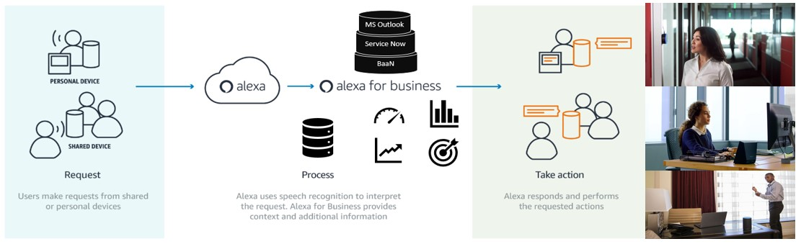

Amazon Alexa as an intelligent concierge assistant helping you getting rid of tedious tasks at work
Alexa for Business utilizes information about the devices, user accounts, and skills in your organization. When someone in your organization asks Alexa a question, Alexa uses this information to respond or perform the requested action. For example, when a user says “Alexa, start the meeting” in a conference room, Alexa uses the location of the device, the calendar information for the room, and the type of video conferencing equipment available, all stored in your Alexa for Business account, to start the meeting
Retrieve data from anywhere using private skills.
Alexa for Business lets you build your own private custom skills for your workplace, your employees, or your customers to use. You can make these skills available only to your shared Alexa devices, and your enrolled users. Alexa for Business provides an additional set of APIs that provide information about device location, which lets you add context to your skills. For example, you could build a skill that lets a user report a printer problem to IT, and the skill could use the device location so that IT knows which printer is broken. Building custom skills is easy, and the Alexa Skills Kit provides tools, documentation, and code samples to help you get started.
Retrieve data from anywhere using private skills.
Let’s people use their voice to interact with technology, so they can spontaneously ask questions in a way that feels natural.
Customer SatisfactionProviding skills to answer questions related to the customer project
Make decisions on timeBased on the Top management daily topics. (Status of Projects, $ units invoiced, Revenue)
Sketch-to-ScaleLeverage skills developed by others company joined to Amazon AWS. Even you can deploy your private Skills.
Project support the Company vision and mission.Achieve a simpler life by creating a connected world through the technology.